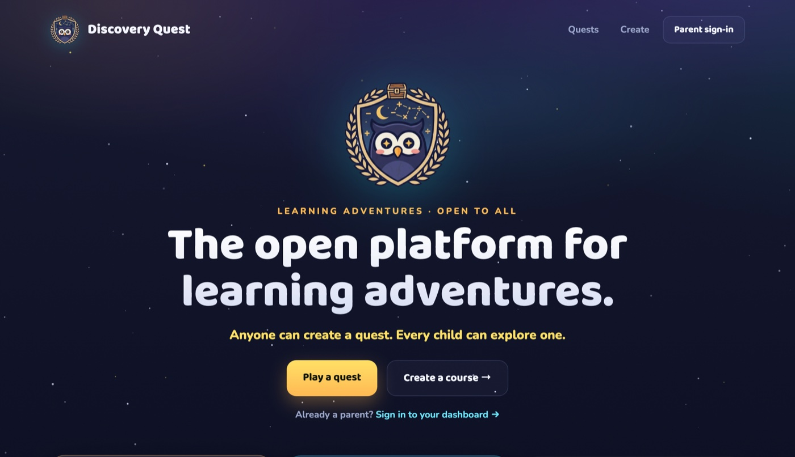

Why I Built Discovery Quest
I have three young kids, and the screen was always going to win — that's not pessimism, it's arithmetic. So I stopped treating the tablet as the enemy and asked a different question: what would it take to make screen time the thing that makes them more curious, not less? Discovery Quest is my answer — a learning world my kids actually ask to play, guided by a talking owl named Luna, with an AI-native engine underneath that I open-sourced. Here's why I built it the way I did.
Every parent of young kids ends up in one of two camps: lock the screen down, or let it babysit. Both camps lose. The screen isn't the problem — passive screen time is. A kid watching another stranger open another toy learns nothing except how to keep watching. But the same device, pointed differently, is the most patient one-on-one tutor ever built: infinite attempts, no sighing, no judgment, always ready to explain it one more way. I didn't want to fight the screen. I wanted to aim it — and you can see where it landed at discoveryquest.app.

What the "educational" apps got wrong
I tried the existing apps with my kids first. Most optimize for the wrong thing — engagement loops over understanding. They hand out badges for finishing, not for mastering, so a child can complete a whole unit and retain nothing. They pick one difficulty and apply it to every kid, so mine were either bored or stuck within minutes. And the one that's unforgivable when you're sitting next to a five-year-old: they assume the child can already read. My youngest can't read a word problem yet. He can absolutely do the math — if someone reads it to him.
The thing I kept coming back to
A learning app for young kids that requires reading has quietly excluded the kids who need it most. If a pre-reader can't play it, it isn't really for young kids.
What it feels like to be the kid
The live game is Luna's Math Quest. A child travels across a world map — Number Meadow, Carry Canyon, Fraction Forest, Geometry Galaxy — with Luna the owl as their guide. They pick a station; each station is one topic. Every problem decomposes into guided steps, and hints escalate gently, so a kid is never stuck staring at a blank answer. Difficulty adapts inside the station: two right in a row nudges it harder, two misses nudge it back, never below the floor — so the same station meets a struggling kid and a confident one where each of them actually is.
Two design choices matter more than any feature. The first is mastery, not completion. Stars are earned for getting it right, not for reaching the end — three stars is a flawless run — and there's no timer anywhere, because speed should never gate a child who's thinking. The second is that nothing learned is quietly forgotten: old skills resurface as "Blast from the Past" reviews, scheduled by a spaced-repetition deck, so a topic mastered in March comes back in May before it can fade. The kid drives the whole thing — they choose the station, the pace, and their own hero on the map.
A talking owl is an accessibility decision
Luna talks. Every question, every hint, every bit of celebration is spoken aloud. That started as a workaround for my pre-reader — but it turned into the most important architectural decision in the whole product, because its reach is far longer than I first realized.
A voice-first design means reading-readiness is no longer the gate to learning. A child who can't read yet isn't locked out; Luna carries the instruction. And because the narration is generated from text rather than recorded by one voice actor in one language, the same design extends to kids in countries where English isn't the first language — swap the narration language, keep the game, the maps, the math. The companion character isn't decoration; she's the interface. Make the guide a voice, and you've quietly opened the door to every kid who can't yet read — in any language.
The rule
Voice-first, not text-first. When the companion narrates everything, a pre-reader in any country can play — and localization becomes a content swap, not a rebuild.
It shows up before practice, too. Every station opens with a short "Learn it" screen where Luna walks the child through one to three animated reps of how to see the idea — repeated addition as equal jumps on a number line, a fraction as slices of a pie — narrated the whole way. Understanding first, drilling second.
Where the AI is actually working
"AI for kids" usually means a chatbot bolted onto a worksheet. Here it isn't a feature you can see — it's doing three quiet jobs underneath:
- It gives Luna her voice. Every spoken line — full sentences and individual number-words stitched together on the fly — is generated audio, warm and consistent, with no studio and no re-records when the script changes. That's what makes voice-first affordable at the scale of an entire K–5 curriculum, and what makes a second narration language a tractable problem instead of a second recording project.
- It adapts to the child. Today that's the difficulty banding inside each station. Next is a reusable real-time live-tutor — spoken, back-and-forth conversation, so a kid can actually talk to Luna and be understood. That's the pillar behind the second game, English Quest, where conversation practice is the point.
- It writes the lessons. This is the one I'm proudest of, and it needs its own section.
Courses are data, not code
The engine and the content are split clean down the middle. The engine is a fixed vocabulary: a catalog of boards (the interactive question UIs) and views (the lesson visuals), plus the player, scoring, and the companion. A whole course — a subject, its worlds, its stations, its lessons, its narration — is just data that composes that vocabulary. No engine code.
| Layer | What it is |
|---|---|
| Engine (code) | A fixed vocabulary: board kinds (the interactive question UIs), view kinds (the lesson visuals), plus the player, scoring, spaced review, and the companion. |
| Course (data) | Worlds → stations, the "Learn it" lesson beats, the word banks each board draws from, and the narration text — composed from the vocabulary, not coded. |
| What changes | A new course is a data file an AI can draft and the validator can check. Only a brand-new interaction needs an engine change. |
Once a course is data, an AI can write one. Hand a model the capability catalog — the menu of every board and view with its description and typed fields — and it can draft a world, a station, a full lesson, in the format. But the part that actually makes that safe is what happens next: a generated course is never trusted blind. It has to pass course:check, a validator with two layers.
npm run course:check -- english.course.yml --app packages/english
# Structural — a JSON Schema (generated from the engine's own capability
# catalog) confirms every board/view it referenced is real and every
# prop is the right type. (It's also the schema you hand the LLM.)
# Semantic — every spoken line has matching on-screen text, every
# reference resolves, and every narration line has real audio.The rule that makes AI-authored lessons trustworthy
Let the model generate; never let it ship unverified. Generation is cheap, fast, and confident — a deterministic validator is what earns it the right to be in front of a six-year-old. Generation proposes; the schema disposes.
That inversion — a creative model on the front, a strict checker on the back — is the same instinct behind the rest of my work. The model is allowed to be imaginative precisely because nothing it produces reaches a child until the validator says the shape is sound and the words and audio all line up.
Why I made it open
The engine, the course format, the validator, and the official courses are open source (AGPL-3.0); the course content is CC BY-SA. The business is the hosted apps, the accounts, the generated audio, and the AI tooling — an open-core model, the WordPress/GitLab shape: the engine is free to study, modify, and self-host; the service is the product.
Why give away the engine? Because I'm one father with three kids and a finite number of evenings, and the lessons my kids need are not the lessons yours need. If a course is data an AI can draft and a validator can prove, then a teacher or a homeschooling parent can contribute a world — a new subject, a new language — without writing a line of engine code. Contribution is open; merge is gated, by hand, by me, because it's a product for young children and pedagogy, accuracy, and age-appropriateness are not things you crowd-source on trust. Open enough that anyone can build; careful enough that I still read every word before it reaches a kid.
Don't fight technology. Aim it.
The platform is one login, many games, and a growing trophy shelf: finish Math Quest and you're a Math Quest Hero; conquer every game and you're a Learning Quest Super Hero. English Quest is next, and the live-tutor comes with it.
My kids are going to grow up with AI the way I grew up with the internet. I can't keep it away from them, and honestly I don't want to. I'd rather hand them a screen that asks them to think — that reads to them before they can read, adapts when they struggle, and never lets a hard-won skill fade — and show them, by building it in the open, that these tools are something you can make, not just something you consume.
- Aim the screen, don't fight it. The device isn't the enemy; passive consumption is.
- Voice-first beats text-first for young kids — it includes pre-readers and makes other languages a content swap, not a rewrite.
- Mastery over completion, with spaced review so nothing learned is quietly forgotten.
- AI does real work underneath — Luna's voice, the adaptation, and the lessons themselves — not a chatbot bolted on top.
- Courses are data, not code, so an AI can author one and a non-engineer can contribute one.
- Generation proposes; a deterministic validator disposes — the only honest way to let a model write lessons for a six-year-old.
- Open core: the engine is open; the careful, human-reviewed merge is the safeguard.
You can play Math Quest now, read the engine on GitHub, or see the whole thing at discoveryquest.app. If you're a parent, a teacher, or just curious — come build a world with me.